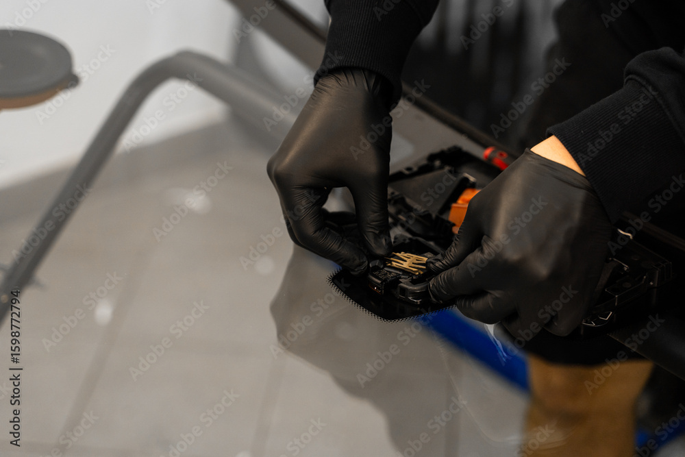

Why Vehicle Recalibration Matters After Repairs
Today’s vehicles are more advanced than ever. Many newer models are equipped with Advanced Driver Assistance Systems (ADAS), features like lane departure warning, adaptive cruise control, automatic emergency braking, and blind spot monitoring. These systems rely on cameras, sensors, and radar that must be precisely aligned to function correctly.
After a collision repair or glass replacement, especially a windshield, those components can shift out of alignment. Even a slight change can impact how your vehicle “sees” the road.
That’s where recalibration comes in.
What Happens If You Skip Recalibration?
Failing to recalibrate your vehicle after repairs can lead to:
- Inaccurate safety system performance
- Delayed or incorrect emergency braking responses
- Lane assist features not working properly
- Increased risk of accidents
In short, your vehicle’s safety features may not protect you the way they were designed to.

Why Recalibration Is Essential for Newer Vehicles
Modern vehicles depend heavily on technology for safety and driver assistance. Unlike older vehicles, repairs today aren’t just about restoring appearance, they’re about restoring function, safety, and precision.
Any time structural components, sensors, or glass are disturbed, recalibration ensures your vehicle is returned to factory standards.
Rydell Auto Body & Glass: Complete In-House Recalibration
At Rydell Auto Body & Glass, we take your safety seriously. That’s why we’ve invested in a state-of-the-art recalibration center right here in-house.
What that means for you:
- No subletting your vehicle to outside vendors
- Faster turnaround times
- Greater quality control
- Certified technicians using advanced equipment
- Repairs done right—from start to finish
We handle everything under one roof, so you can drive away with confidence knowing your vehicle is fully restored, both inside and out.
Drive Away With Confidence
When you choose Rydell Auto Body & Glass, you’re not just getting repairs, you’re getting peace of mind. From body work and glass replacement to precise recalibration, we do it all to ensure your vehicle is safe, reliable, and road-ready.